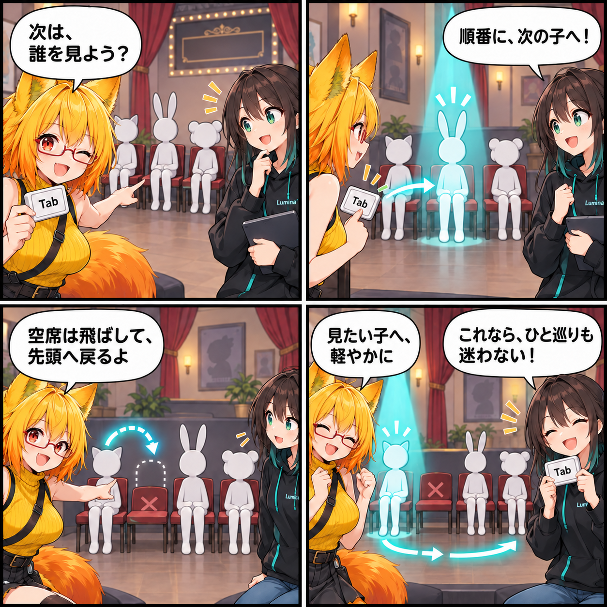

Tabで、次のアバターへ進む日
複数のアバターを並べたとき、次に見たい一人へ移る操作は何度も繰り返します。今回はデスクトップでTabキーを押すと、読み込み済みアバターを順番に選択できるようにしました。

次の一人へ、Tabで進む
複数のアバターを並べていると、次に見たい一人へ選択を移すための操作が繰り返しになります。今回、デスクトップ操作ではTabキーで次のアバターを選べるようにしました。最後の一人まで進むと先頭へ戻るため、同じ操作で一周できます。
いまの操作を邪魔しない
文字を入力している最中、キー割り当てを変更している最中、または選択をロックしている間には、この切替は動きません。Tabを使う場面と入力・設定を扱う場面が重ならないよう、既存の操作状態を確認してから選択を移します。
消えたアバターを飛ばす
一覧に残っていても、すでに破棄されたアバターのルートは選択対象にしません。候補を順番に見ながら有効なものだけを選び、途中に消えたものがあっても次のアバターへ進めます。先頭からの選択、順送り、末尾から先頭への循環、破棄済み候補のスキップはエディターテストで確認する対象に加えました。
ほかにも進んだこと
同じ集計期間には、VBG書き出しとライブラリUIの静的監査で見つかった不具合を修正しました。また、Viewer・Preview・Captureの描画で前の要求の画面効果が残らないよう、描画パスを使う前に状態を消去する処理と回帰テストを追加しています。不要になったEditorメニューの整理も行いました。
この日記で記しているのは集計期間内にコミットされたコードの内容です。日記制作時点でUnity実行、VR実機、性能計測、リリース確認は行っていません。
4コマの裏話
順番に呼ばれる三つの椅子でTabによる選択循環を表現しました。途中の空席を飛ばす場面は、破棄済みアバターを選ばない処理の比喩です。実際のアプリ画面や実行結果ではありません。
まとめ
Tabキーで読み込み済みアバターを順番に選び、末尾から先頭へ戻れるようにしました。文字入力・キー割り当て変更・選択ロック中の操作を守り、破棄済み候補は飛ばします。
本日のひとこと
見たい一人へ、軽やかに。